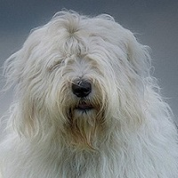
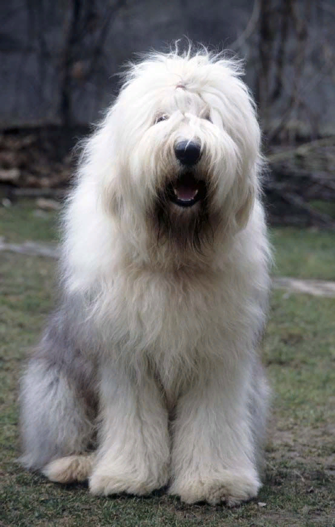
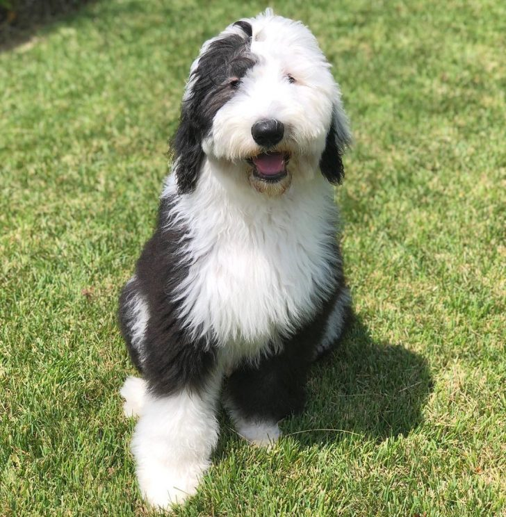
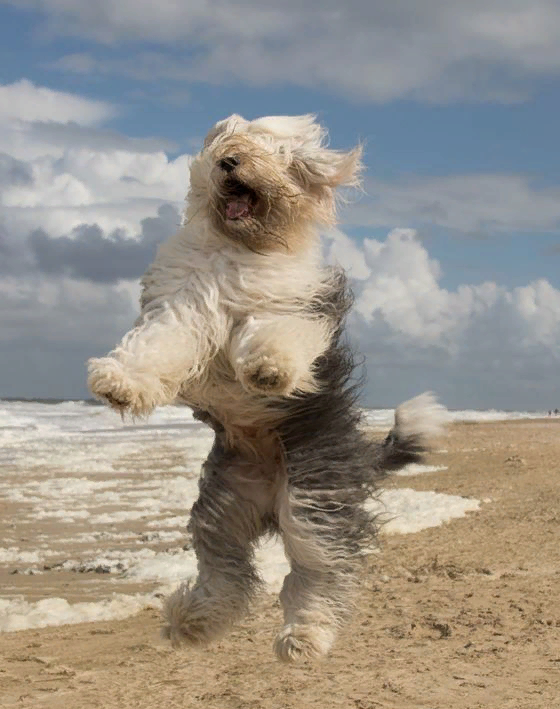
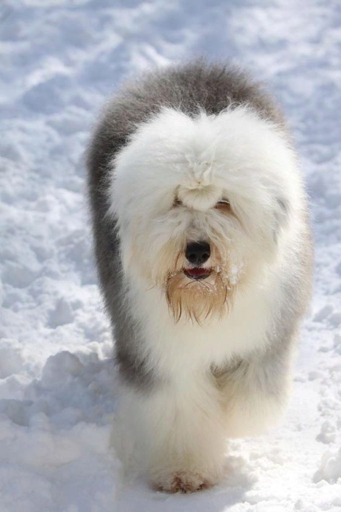
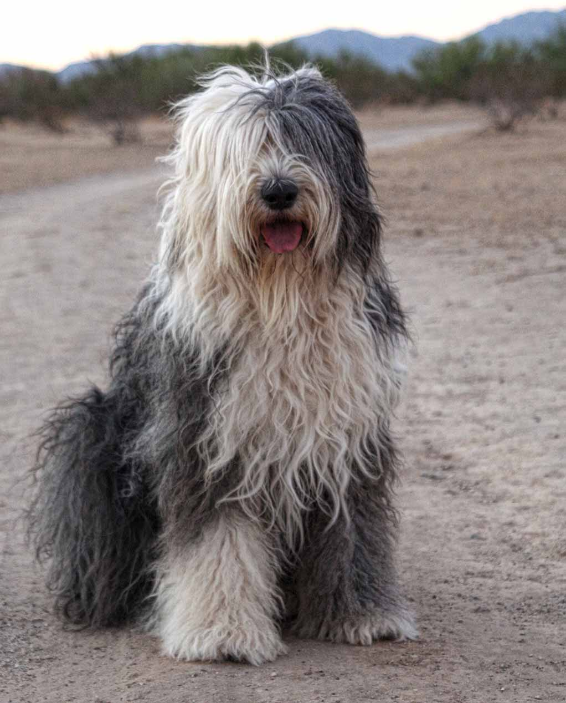
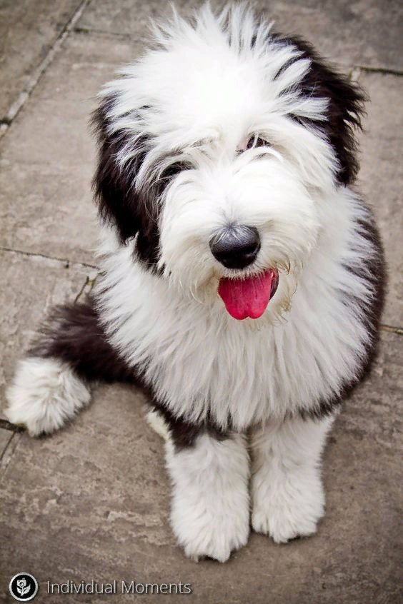

Бобтейл (староанглийская овчарка)

Оценка породы:
Ум
Линька
Популярность
Охранные качества
Игровая активность
Сторожевые качества
Дружелюбность к детям
Склонность к дрессировке
Характеристика породы
Краткое описание
Условия содержания:
В частом доме, в доме с садом, в просторной квартире
Длина шерсти:
Длинная
Размер взрослой собаки:
Рост самок – 54-61 см, самцов 56-63 см,
вес примерно 32-46 кг
вес примерно 32-46 кг
Средняя продолжительность жизни:
12-14 лет
Выгул:
Обязателен (2-3 раза в день)
Потребность в физической нагрузке:
Высокие потребности в физической нагрузке (регулярные или ежедневные тренировки более 3 часов в день)
Стоимость щенка:
30000-70000 руб.
Фото взрослой собаки






Особенности характера и поведения
Бобтейл – типичная пастушья собака, обладающая спокойным уравновешенным характером и достаточной физической силой, чтобы руководить стадом. При должном воспитании овчарка становится хорошим охранником и работником, уважает людей и никогда не перечит словам хозяина.
С первого взгляда Староанглийские овчарки могут показаться надменными и флегматичными, но на самом деле они очень игривы и активны, особенно на природе. Из них нельзя сделать агрессивную собаку, даже при самых жестких условиях. Однако многие склонны к трусости.
Достоинства
Собака, выведенная для работы на человека, должна обладать не только развитой мышечной системой и выносливостью. Необходим ум и смекалка, позволяющие выполнять обязанности скотопаса. Бобтейл подходит по всем параметрам. Кроме того он не склонен к агрессии и враждебному настроению.
Эта порода хорошо дрессируется, благодаря сдержанности и высокому интеллекту легко справляется с любыми задачами. При отсутствии физической нагрузки и воспитания овчарки ленятся и становятся трусливыми.
Замечательно ладят с детьми, могут стать хорошими няньками – следят ненавязчиво, играют осторожно, всегда помогут. Предано любят хозяев, не склонны к побегам, семья для Бобтейлов – приоритет.
Игривые и забавные Староанглийские овчарки смотрятся оригинально: они похожи на больших плюшевых медведей. Им нравится быть в центре внимания, они любят людей и любое общество в целом.
Оценивают поведение и настроение хозяина. Эти собаки не будут чрезмерно навязчивы, они скорее лягут у ног и постараются поднять настроение.
Недостатки
Они могут вести себя немного надменно и горделиво. При неправильном воспитании собака либо покорит волю хозяина и станет в доме главной, либо будет трусливой и стеснительной. Кроме этого овчарки склонны к постоянному контролю домочадцев (инстинкты пастуха).
Чрезмерная активности может принести неудобства, если территория проживания собаки небольшая. Кроме этого Бобтейлы сильно линяют и имеют специфичный запах.
Уход и содержание
Бобтейл, несмотря на его лохматость, достаточно прост в уходе и не требует особых усилий. Они могут ужиться в квартире, но лучшим вариантом станет частный загородный дом с прилежащей территорией. Жить собаке нужно с семьей, а не на цепи во дворе. Не подходят для охраны.
Перед покупкой щенка нужно приобрести необходимые предметы: миски с подставками (для регулирования высоты), лежак, расчески (лучше нескольких видов, жесткие с длинными зубцами), шампуни и зубную пасту (для собак), игрушки. Для породы важна нормальная температура, выбирать место стоит с учетом отсутствия прямых солнечных лучей.
Питание
Рацион для каждого питомца разрабатывается индивидуально. Он может содержать как натуральную пищу, так и сухие корма. Если заводчик выбирает второе, то внимание следует обращать только на премиум и супер премиум класс для крупных пород.
Для взрослого Бобтейла достаточно будет 2-х разовое кормление после прогулок. Объем порций средний, но это зависит от веса и активности питомца. Щенков кормят чаще (5-6 раз в день). В свободном доступе всегда должна быть чистая вода. Питание строго по часам, желательно без дополнительных прикормок.
Нельзя смешивать натуральное кормление и сухое. Кроме этого не рекомендуется кормить со стола острым, соленым, сладким, мучным, жареным и жирным. Кости собакам противопоказаны, особенно трубчатые (курятина, индейка), можно сырые говяжьи в целях чистки зубов.
С ветеринаром обсуждается нужный комплекс витаминов и минералов, для поддержания баланса полезных веществ. В качестве лакомств можно приобрести специальные кости или канатики в зоомагазинах.
Здоровье
Бобтейлы для своих размеров живут долго – 12-14 лет при правильном уходе. Однако они предрасположены ко многим генетическим заболеваниям. Эти крупные красавцы нуждаются в постоянном уходе за ушами, слизистыми и шерстью.
Помимо этого собаку стоит показывать ветеринару раз в год, прививать от вирусных заболеваний и правильно кормить. Своевременная вакцинация – залог того, что щенок не подхватит опасную инфекцию.
Список заболеваний, к которым склонны Бобтейлы обширный, однако при правильном уходе и своевременном обращении к ветеринару большинство можно избежать:
Воспаление ушей (как следствие глухота) либо врожденная глухота;
Демодекоз – проявляется при неправильном или несвоевременном уходе за шерстью, спровоцировано клещом, который может годами жить на теле питомца.
Себорбея – воспаление и нарушение работы сальных желез (из-за потоотделения);
Гипотиреоз – чрезмерные кожные выделения и потеря шерсти;
Дисплазия тазобедренного сустава – выработка бракованных костных клеток, хромота, острые боли (неизлечимо, но возможно торможение процесса);
Атаксия мозжечка – неизлечимая болезнь, связанная с неврологической системой (нарушение координации, судороги);
Аутоимунная гемологическая анемия – процесс уничтожения лейкоцитов эритроцитами (запах изо рта, апатия, отсутствие аппетита).
Выгул
Староанглийские овчарки активны, им необходим выгул 2-3 раза в день по 40-50 минут. Они достаточно независимы, их не нужно развлекать: бегать, бросать фрисби. Но от такого вида деятельности собаки тоже не откажутся. Бобтейлам чрезмерная физическая нагрузка не будет полезна, особенно на задние лапы (дисплазия может развиться из-за этого).
Эти собаки не склонны к побегам или охоте на мелких животных, для выгула в людных местах стоит приобрести длинный крепкий поводок и свободный ошейник (щенка нужно приучать с детства).
Не советуют гулять в местах с высокой травой или другой растительностью. Питомец может собрать все семена и плоды на своей длинной шерсти. Отличным местом станет парк или ровная поляна. В холодное время года и в грязь надо надевать защитные комбинезоны, чтобы покров не пачкался.
Уход за шерстью
Конечно, уход за такой роскошной гривой тяжелый:
Бобтейлы особо не линяют, но шерсть активно меняется три раза: в 4 месяца, в 1 год и в 1.5-2 года. После первой смены покрова важно вычесывать собаку 2-3 раза в неделю с помощью жесткой щетки и обычной расчески. После третьей смены хватит 2-3 раз в месяц, но необходимо следить за образованием колтунов. В летний период собак стригут почти по машинку, чтобы кожа не прела.
Купают 2-3 раза в год, по мере загрязнения, но так как питомец активно потеет, нужно протирать специальными растворами (белые пятна хлоргексидином). Сушить надо феном (холодной подачей воздуха), не допускать влажность покрова.
После прогулок питомцев чистят от растений, веток и грязи.
Особое внимание уделяют ушам – чистят 2-3 раза в неделю и удаляют лишние волосы внутри ушной раковины. Глаза нужно отчищать от слез и выделений. В летний сезон надо обрабатывать от блох и клещей.
Челку зачесывают вперед, чтобы она ниспадала на глаза. Но для обычной жизни можно подвязывать в хвостик на лбу. В целом, даже на выставке
Челку зачесывают вперед, чтобы она ниспадала на глаза. Но для обычной жизни можно подвязывать в хвостик на лбу. В целом, даже на выставке
Видео о породе